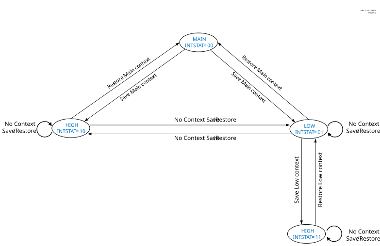

The interrupt controller automatically saves the context information in the shadow registers. Both the saved context values (i.e., main routine and low ISR) can be accessed using the same set of shadow registers. By clearing SHADLO, the CPU register values saved for main routine context can be accessed. Low ISR context is automatically restored to the CPU registers upon exiting the high ISR. Similarly, the main context is automatically restored to the CPU registers upon exiting the low ISR.
The shadow registers are readable and writable, so if the user desires to modify the context, then the corresponding shadow register needs to be modified and the value will be restored when exiting the ISR. Depending on the user’s application, other registers may also need to be saved.
